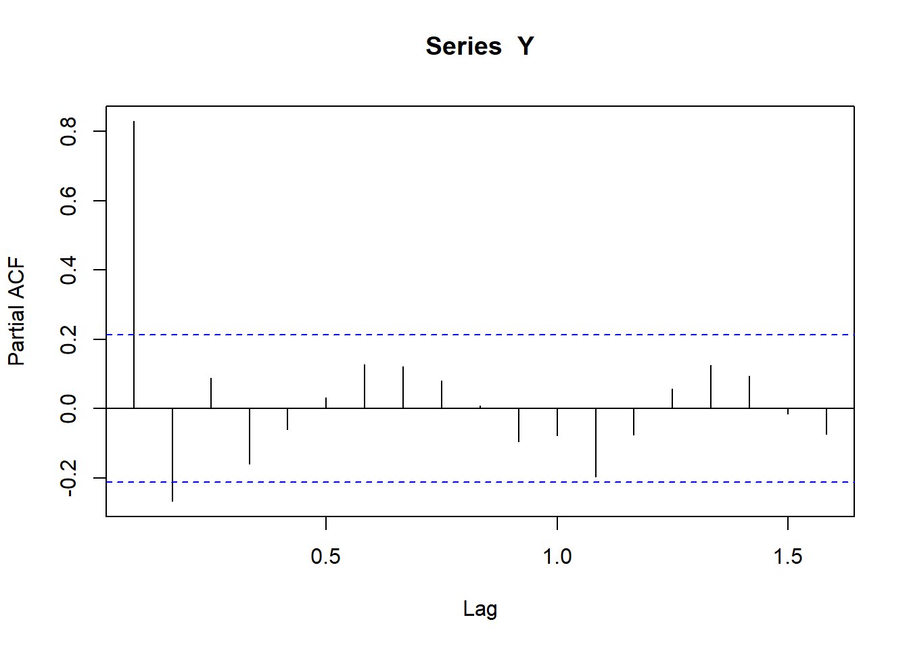
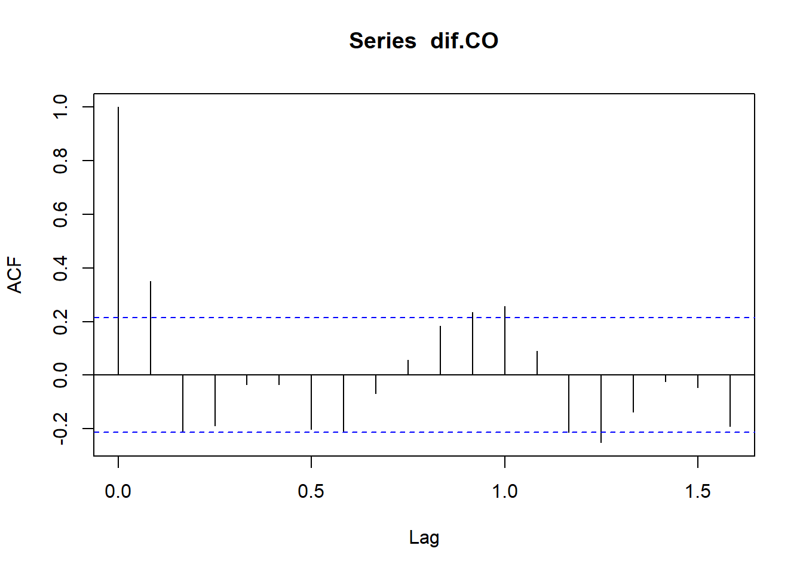
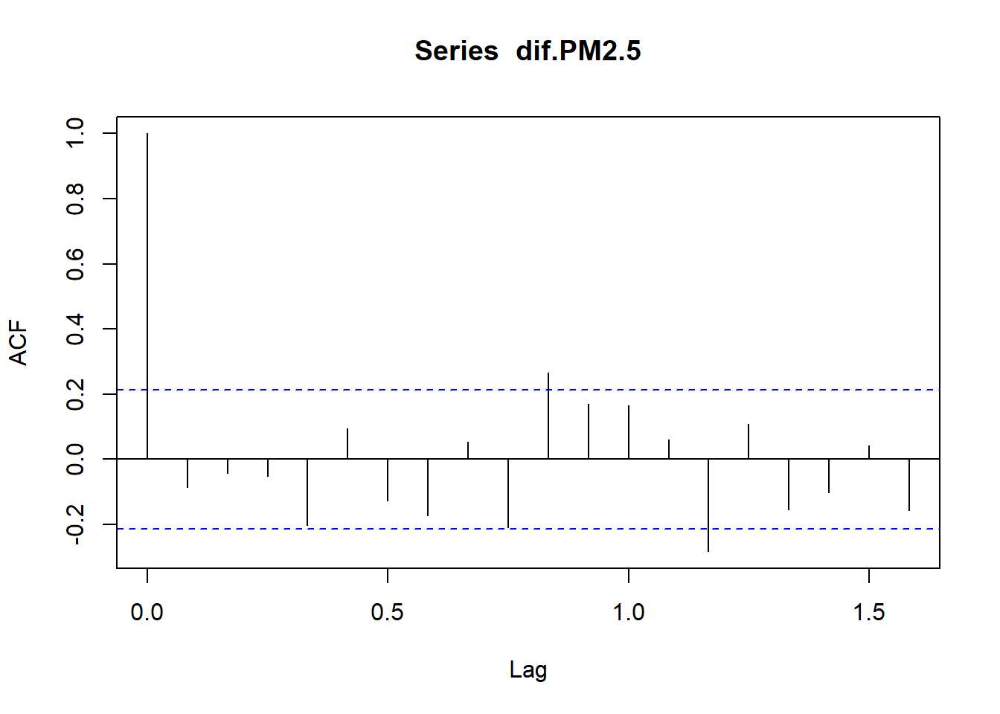
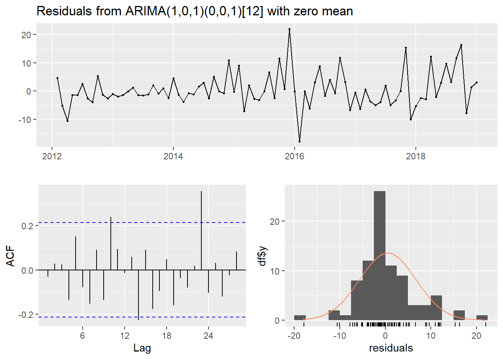
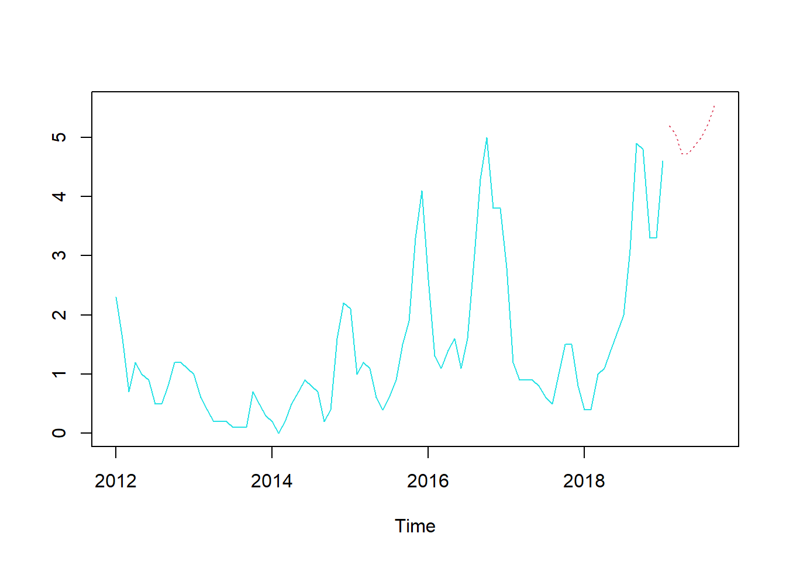
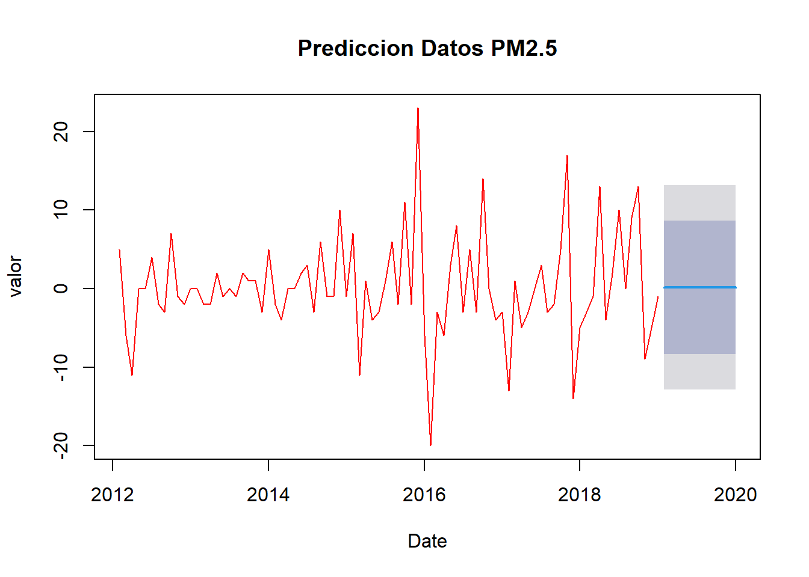

Chapter 5 ACTIVIDAD 5: PROPUESTA AVANCE 5
Uso de las variables en el tiempo, el ajuste a un modelo lineal y estacionario.
5.2 Librerias
## Registered S3 method overwritten by 'quantmod':
## method from
## as.zoo.data.frame zoo## Cargando paquete requerido: zoo##
## Adjuntando el paquete: 'zoo'## The following objects are masked from 'package:base':
##
## as.Date, as.Date.numeric## Successfully loaded changepoint package version 2.2.4
## See NEWS for details of changes.5.3 Datos en series de tiempo
## DateTime CO PM2.5
## Jan 2012 1325376000 2.3 14
## Feb 2012 1328054400 1.6 19
## Mar 2012 1330560000 0.7 13
## Apr 2012 1333238400 1.2 2
## May 2012 1335830400 1.0 2
## Jun 2012 1338508800 0.9 25.4 Graficas de datos

Revisamos que si sea de la clase ts (serie de tiempo)
## [1] "mts" "ts" "matrix" "array"Corroboramos el inicio de la serie
## [1] 2012 1Corroboramos el final de la serie
## [1] 2019 1


 ## Verificamos que sea ESTACIONARIA CO y PM2.5
## Verificamos que sea ESTACIONARIA CO y PM2.5
##
## Augmented Dickey-Fuller Test
##
## data: CO
## Dickey-Fuller = -2.9429, Lag order = 4, p-value = 0.1889
## alternative hypothesis: stationaryObservación: Si el valor p es menor que 0.05 es estacionaria, en este caso SI es estacionaria
Le preguntamos a R, a través de la función ndiffs, cuantas veces diferenciamos para tener la estacionariedad
## [1] 1nos indica que 1 así que diferenciamos una vez y la llamamos
dif.CO<-diff(CO)
#la graficamos
plot(dif.CO, main=" ", ylab="valor", col="deepskyblue", xlab="Date")
title(main="Datos de CO") Volvemos a evaluar si es estacionaria PM2.5 y obtenemos que sí, realizamos el mismo procedimiento:
##
## Augmented Dickey-Fuller Test
##
## data: PM2.5
## Dickey-Fuller = -2.7999, Lag order = 4, p-value = 0.2476
## alternative hypothesis: stationary## [1] 1dif.PM2.5<-diff(PM2.5)
#la graficamos
plot(dif.PM2.5, main=" ", ylab="valor", col="deepskyblue", xlab="Date")
title(main="Datos de PM2.5")



5.5 Modelo autoarima CO
## Series: dif.CO
## ARIMA(1,0,2) with zero mean
##
## Coefficients:
## ar1 ma1 ma2
## 0.7553 -0.3039 -0.6122
## s.e. 0.1133 0.1127 0.0882
##
## sigma^2 = 0.298: log likelihood = -67.32
## AIC=142.64 AICc=143.15 BIC=152.37Le preguntamos a R, a través de la función auto.arima, cuál sería el modelo de ajuste. En el caso nuestro el modelo es ARIMA(1,0,2)
Ahora le pedimos los punto de cambio de la serie a R. La función se llama cpt.mean y detecta un punto de cambio en la media
## numeric(0) Ahora predecimos, los siguientes 12 meses, pero uno puede predecir cuantos uno quiera
## Point Forecast Lo 80 Hi 80 Lo 95 Hi 95
## Feb 2019 0.02734346 -0.7970295 0.8517164 -1.233426 1.288113
## Mar 2019 0.02734346 -0.7970295 0.8517164 -1.233426 1.288113
## Apr 2019 0.02734346 -0.7970295 0.8517164 -1.233426 1.288113
## May 2019 0.02734346 -0.7970295 0.8517164 -1.233426 1.288113
## Jun 2019 0.02734346 -0.7970295 0.8517164 -1.233426 1.288113
## Jul 2019 0.02734346 -0.7970295 0.8517164 -1.233426 1.288113
## Aug 2019 0.02734346 -0.7970295 0.8517164 -1.233426 1.288113
## Sep 2019 0.02734346 -0.7970295 0.8517164 -1.233426 1.288113
## Oct 2019 0.02734346 -0.7970295 0.8517164 -1.233426 1.288113
## Nov 2019 0.02734346 -0.7970295 0.8517164 -1.233426 1.288113
## Dec 2019 0.02734346 -0.7970295 0.8517164 -1.233426 1.288113
## Jan 2020 0.02734346 -0.7970295 0.8517165 -1.233426 1.288113valor predicho de la diferencia
plot(predCO2024, main=" ", ylab="valor", col="deepskyblue", xlab="Date")
title(main="Prediccion Datos CO") ## Modelo autoarima PM2.5
## Modelo autoarima PM2.5
## Series: dif.PM2.5
## ARIMA(0,0,0) with zero mean
##
## sigma^2 = 43.17: log likelihood = -277.32
## AIC=556.65 AICc=556.7 BIC=559.08## [1] 81plot(mvalPM2.5, type = "l", cpt.col = "red", xlab = "Value", cpt.width = 4, main = "default penalty")
## Point Forecast Lo 80 Hi 80 Lo 95 Hi 95
## Feb 2019 0.1543224 -8.364682 8.673327 -12.87437 13.18302
## Mar 2019 0.1543224 -8.364682 8.673327 -12.87437 13.18302
## Apr 2019 0.1543224 -8.364682 8.673327 -12.87437 13.18302
## May 2019 0.1543224 -8.364682 8.673327 -12.87437 13.18302
## Jun 2019 0.1543224 -8.364682 8.673327 -12.87437 13.18302
## Jul 2019 0.1543224 -8.364682 8.673327 -12.87437 13.18302
## Aug 2019 0.1543224 -8.364682 8.673327 -12.87437 13.18302
## Sep 2019 0.1543224 -8.364682 8.673327 -12.87437 13.18302
## Oct 2019 0.1543224 -8.364682 8.673327 -12.87437 13.18302
## Nov 2019 0.1543224 -8.364682 8.673327 -12.87437 13.18302
## Dec 2019 0.1543224 -8.364682 8.673327 -12.87437 13.18302
## Jan 2020 0.1543224 -8.364682 8.673327 -12.87437 13.18302plot(predPM2.5, main=" ", ylab="valor", col="red", xlab="Date")
title(main="Prediccion Datos PM2.5")